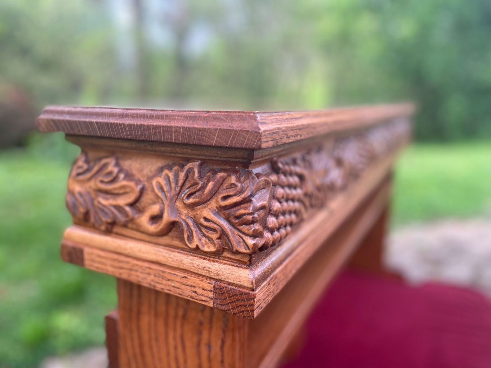

St. Bernard Abbey Woodworks
Altars, pulpits, pews, kneelers, lecterns, doors and cabinets, made to order, and the restoration of church furniture. Also the wooden boxes for our columbarium.
Monks at work
For more than a century the monks of St. Bernard have built, carved, baked, printed and farmed. Br. Joseph Zoettl and his Grotto are only the most famous of their works.
“If there are craftsmen in the monastery, let them practise their crafts with all humility.”
The Rule of St. Benedict, chapter 57 (Artifices si sunt in monasterio…)
St. Benedict wanted his monks to live by the work of their hands, “as our fathers and the apostles did” (chapter 48). Prayer and work are not two lives but one. Here is some of what that has looked like on our hill.

The builder
Michael Zoettl was born in Landshut, Bavaria, and came to St. Bernard in 1892, a boy of about fourteen who meant to become a priest. An injury left him with a hunched back, and he could not be ordained. He became a lay brother instead, made his vows in 1897, and kept house for Benedictine priests in the missions of the South.
Back at the abbey he was given charge of the powerhouse, and for some thirty years worked long days at its boilers. In the spare hours he began to build: small grottoes to sell for the missions, then a little church, then whole cities in miniature, from cement, stone, marble, shells, broken glass, tiles, beads and whatever people mailed him from around the world. He never saw most of the places he built; he worked from postcards and books.
In 1932 his miniatures were moved into the abbey's old quarry, and on 17 May 1934 the Ave Maria Grotto was dedicated. He kept building until 1958, when he finished the Basilica of Lourdes. He died on 15 October 1961 and lies in the abbey cemetery, a short walk from his Grotto.
Sources: the National Register of Historic Places nomination (1983), the Encyclopedia of Alabama, and avemariagrotto.com. Sources differ on some dates; they are given here as the Grotto gives them.

The artist and engineer
Henry Odie Johnston came to us from Florence, Alabama, graduated from St. Bernard in 1951, and made his vows in 1954. He was the last lay brother of the abbey.
He began in the tailor shop, making habits and vestments, then learned ceramics from Fr. Timothy Harrison and was sent by Abbot Bede to study with the sculptor Herbert Jogerst, who carved the statues of our Abbey Church. His bust of Br. Joseph, which he called “my first awkward attempt at portraiture”, is still in the Grotto Shop; his carved Dove of the Holy Spirit hangs over the door of our Chapter Room.
He went on to study and teach sculpture, photography, engineering and design, and worked under the name Nov Ontos, “new being”. The Evelyn Burrow Museum at Wallace State, which received his collection, called him “a true polymath”.
Sources: Cullman Tribune obituary (23 June 2025); One Voice, Diocese of Birmingham; Wallace State Community College (2026).
Those who came before
Many of the first monks were Bavarian craftsmen. They built the abbey with their own hands and passed their trades to the young. These are some of them; we are still gathering their stories.
To confirm with the community
Do you have photographs, letters or memories of these monks or their work? Please call the monastery at 256-734-8291.
The work today
Altars, pulpits, pews, kneelers, lecterns, doors and cabinets, made to order, and the restoration of church furniture. Also the wooden boxes for our columbarium.

Bread and cookies baked by the monks, sold at the Grotto shop.

Our own small press, bringing the abbey's books back into print: Fr. Aloysius Plaisance's travels and letters, and Abbot Ambrose Reger's The Benedictines in Alabama.

A small beef-cattle herd, about forty chickens and a garden, on more than 800 acres of woods and fields.
Monks also make candles, sew habits, cut hair, keep the grounds, care for guests, and teach at St. Bernard Prep.